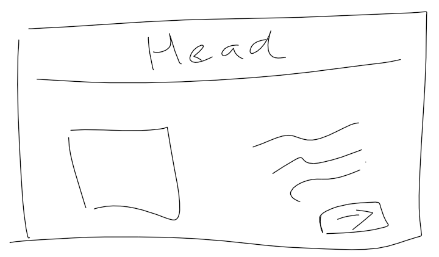
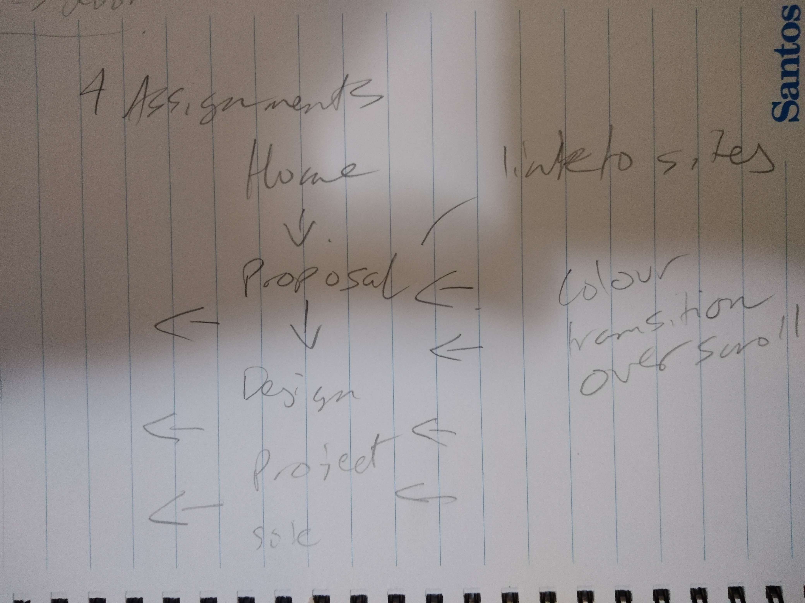
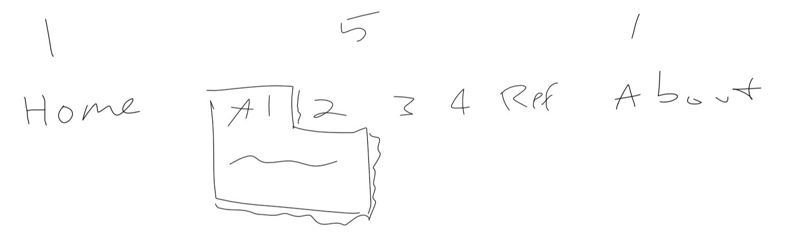

I start this reflection by saying that I really enjoyed making the process portfolio. I started my design by thinking about what I wanted on the front page. It had to represent me, and show a new user that this was my portfolio and hence, I briefly sketched out the following wireframe:
After this, having talked so much about interactivity and engagement, I ideated a couple of ways in which to make the index page engaging. Trying to incorporate movement into the screen, I eventually came up with the side-scrolling as is implemented now. In hindsight, I feel it might have been better to develop this after completing the website rather than before.
With some engagement created, and a wireframe of the initial homepage, I had a think about how the whole website would sit. Referencing the brief, I documented a full site-map. I considered the design choice of separating the assignment components into different webpages, and noted this, however ultimately they were left combined for continuity, as well as ease of access
Next, was colour. After looking at a couple of different sites, I stumbled across Happy Hues UI Palletes ('Happy Hues', 2019). This website shows, as it says, curated colours in the context of a webpage. I found this really useful to understand the different ways in which colours match together to make a User Interface. This website did not contain any colours which I liked however, so I moved to Coolors.co ('Coolors', 2014) to generate a colour set (as linked), and stumbled on the current set.
From here, it was mostly a process of sticking the content together. A lot of CSS was completed along the way, however I feel the basis from the homepage was a good template to follow. In reflection, I would have liked to spend a bit more time on the User Experience of the website, however I think a lot of my time was spent styling small elements. Overall, I am relatively happy with how it has turned out, and I would be happy to publish this publicly.
References
Coolors. (2014). Retrieved from https://coolors.co/
Happy Hues. (2019). Retrieved from https://www.happyhues.co/